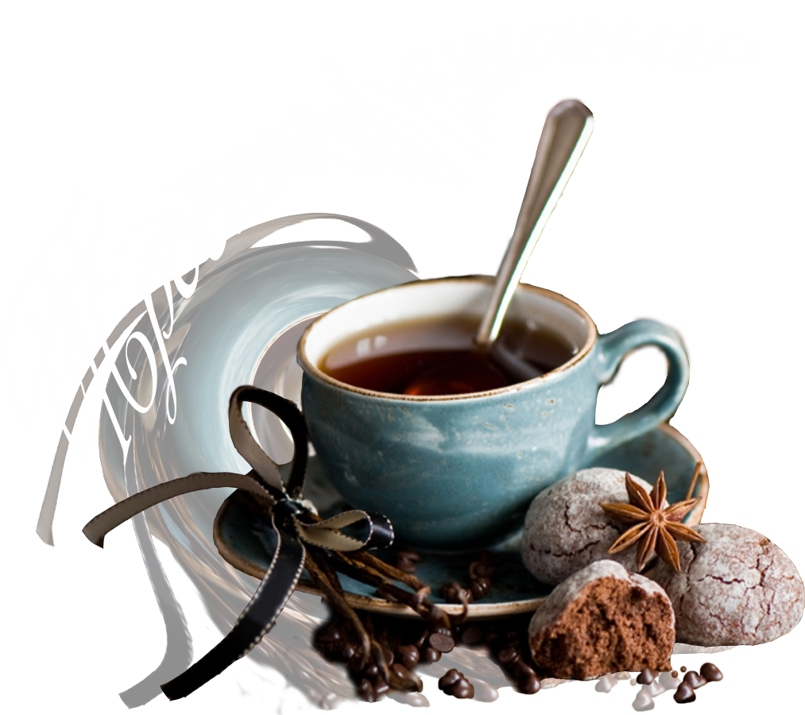

|  | Перед тим як захопити світ, захопи каву Good Cofee | |
 |

|
Назва | Вихід (мл) | Ціна (грн) |
| Кава з прянощами (кардамоном, корицею, цедрою цитрусових) | 120/40/10 | 49,00 | |
| Кава по-мексиканськи (з мускатним горіхом, корицею) | 120/40/10 | 49,00 | |
| Кава по-новозеландському (з цукром) | 120/40/10 | 43,00 | |
| Кава по-румунськи (з какао і ваніллю) | 120/40/10 | 43,00 | |
| Кава з кардамоном | 120/40/10 | 43,00 |